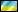
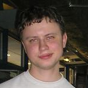

Интервью с победителями Харьковских отборочных по Heroes5
Вступление: харьковский отборочный чемпионат завершился неделю назад. Победители известны. Пользуясь возможностью популярнейший русский сайт heroesportal взял интервью у всех троих игроков. Эти интервью довольно объемны, вопросы различны и необычны. Интервью представлено ниже, наслаждайтесь…
Интервью с sw.DH (бронзовый призер)
Привет! Итак уже несколько дней прошло с момента окончания чемпионата по Heroes5, где тебе, впервые за долго время удалось попасть в призеры. Твои впечатления?
Привет! Впечатления супер, меня просто разрывает. Я очень долго ждал для себя такого шанса и вот он выпал. И хотя перед чемпионатом я и планировал попасть в тройку призеров, все таки вдвойне приятно, что это получилось.
Расскажи как ты готовился к турниру. С кем тренировался, сколько ну и т.п.
Подготовку к чемпионату начал задолго, играл по Интернету на западноевропейском ладдере, под аккаунтом, про который не знали даже мои тиммейты. Так же тренировал кастомы с Инвизиблом и Ультрамарином. Результаты видите сами.
Кого перед чемпионатом ты считал главными фаворитами? Сбылись ли твои ожидания? Считаешь ли ты результаты неожиданными или наоборот- закономерными?
Все игроки входившие в топ-10 Харькова для меня были фаворитами. Ожидания сбылись на 100% я ожидал, что конкуренцию сможет составить ВАйт, но не сложилось и все три призовых взяли игроки клана sw, что в общем то неожиданно, но не сенсационно.
Ты победил Инвизибла в виннерской сетке, но в лузерах ему удалось взять реванш. Как оценишь эту ситуацию?
Он был не сосредоточен на игре во время матча по виннерам, а я, напротив, старался отыграть свой максимум. В лузерах получилось наоборот, он рвался к первому месту, а я уже расслабился.
Давай поговорим о твоей неигровой жизни. Не мешает- ли карьера игрока обычному досугу. Как к этому относятся родители, как обстоят дела с личной жизнью?
Помимо «героев» я также увлекаюсь боксом, на довольно профессиональном уровне. Эти два увлечения создают большой дефицит свободного времени и проблемы с учебой, но эти проблемы я стараюсь вовремя решать. Родители лишь рады, что у меня такой напряженный график. На девушек всегда хватало времени, недостатка общения с противоположным полом у меня никогда не было ;D
Спасибо тебе за интервью! Что ты хочешь напоследок сказать своим близким и тем кто болел за тебя?
Спасибо вам за поддержку, она очень важна для меня. В будущем я постараюсь всегда оправдывать ваши ожидания. Также хочу передать привет моему тиммейту, который сейчас переживает тяжелый период в жизни, я уверен он справится. Ну и конечно, отдельный привет самым дорогим людям, моим родителям!

Интервью с ToP)Gannibal.sw (серебряный призер)
Привет! Прошло некоторое время с момента завершения успешного для тебя чемпионата. Как ты оценишь свое выступление и сам чемпионат в целом?
Привет! Чемпионат действительно получился довольно успешным для меня, что не может не радовать по целому комплексу причин. За свое выступление ставлю себе твердую пятерку, хотя возможно, можно было бы побороться и за золото. А вот организация чемпионата оставляла желать лучшего. Долгое ожидание судей, периодические проблемы с техникой и непонятки в сетке оставили не лучшие впечатления.
Как проходила твоя подготовка к турниру? С кем ты тренировался и как много? Я тренировался не очень много, потому что также занят решением личных вопросов и организационной деятельностью с моим War3 кланом. Тренировки в основном состояли из кастом геймов с одним единственным игроком- Un.Wolf-ом.
Ты упомянул личные проблемы! НЕ мешали ли они тебе тренироваться, а в последствии- показать хороший результат?
Когда то я говорил, что играю существенно лучше, когда в жизни у меня все в порядке. Проблемы реальной жизни очень мешали вести полноценные тренировки и настраиваться на этот, очень важный, турнир, но на итоговом результате это, к счастью, никак не сказалось…
Тебе удалось дойти до суперфинала по сетке виннеров, причем за 4 матча ты проиграл лишь одну партию, но затем уступил своему тиммейту в суперфинале со счетом 4:1. Твоя оценка данной ситуации?
Падение Инвизибла в лузера можно назвать ошибкой, которая стоила финальной части сетки интриги. Игры в целом были довольно простыми, разве что пришлось напрячься в матче против Вайта. В суперфинале я уже расслабился, так как знал, что топ-2 уже мое. Первую серию я еще боролся, но во второй отдал победу почти без борьбы.
Давай поговорим о твоей неигровой жизни. Не мешает- ли карьера игрока обычному досугу. Как к этому относятся родители, как обстоят дела с личной жизнью?
По сути моя карьера игрока это и есть мой досуг. Так или иначе, но моя жизнь тесно связана с компьютерами, причем далеко не только с играми. Среди прочих увлечений хочу отметить теннис, который я бросил из-за проблем со здоровьем и к которому хочу вернуться. Что касается родителей, то моей маме отнюдь не нравится мое увлечение, но последнее время она смирилась с ним, так как я начал совмещать игровую и организаторскую деятельность. К тому же я стал приносить в дом кое-какие деньги, что совсем не лишнее. Что касается девушки, то с девушкой я расстался чуть больше месяца назад. Было очень больно, мы были вместе почти два года, но… она нашла для себя другие приоритеты в жизни. Очень жаль, но значит судьба распорядилась так, что нам не по пути. Удачи ей, а я пожалуй продолжу поиски той идеальной для меня. Но думаю, какая бы девушка ни была со мной, мои увлечения не будут мешать нашим отношениям.
Помимо успешной карьеры игрока в «героев» ты известен еще и как менеджер клана по war3. Твоя роль в клане? И почему ты не являешься игроком клана?
Я менеджер клана ТоР, занимаюсь чисто организаторской деятельностью, помогая игрокам быть приближенным к кибер-спортивной тусовке и при этом максимально не отвлекаться на организационные моменты. Что касается моей карьеры игрока в war3, то считаю свою карьеру более менее удачной, хотя и законченной. Жаль, но мне так и не удалось посетить ни одного крупного чемпионата, но думаю эти цели уже остались в прошлом. (прим. www.topw3.narod.ru- спустя несколько дней после интервью Ганнибал выиграл квоту на финал про серии лиги NLKI и тем самым осуществил свою мечту, впрочем к этому мы еще вернемся в разделе новостей).
Спасибо тебе за интервью! Что ты хочешь напоследок сказать своим близким и тем кто болел за тебя?
Спасибо тем людям, которые так или иначе, словом или делом, но поддерживают меня. Для меня очень важна поддержка родных и близких людей, она придает мне сил и желания быть успешным и дальше. Спасибо, все мои победы для вас…
Интервью с sw.Invisible (золотой призер)
Привет! У нас уже была возможность с тобой пообщаться еще до начала чемпионата, поэтому вкраце, как заканчивалась твоя подготовка, было ли что то новое и особенно запоминающееся?
Привет. Нет я играл как обычно, разве что старался играть меньше кастомов с харьковчанами, чтобы не палить связки. Играл в основном западно-европейский ладдер, игроки оттуда весьма интересны в плане игрового стиля и хотя, в целом, слабее чем игроки СНГ, но я много у них научился.
Какие были ожидания перед чемпионатом? На какое место рассчитывал и кого считал главным соперником?
Поскольку я готовился очень напряженно, я ориентировался на результат топ-1, ну в худшем случае топ-2. Любой другой результат был бы для меня провальным. Что касается основных соперников, то это были мои тиммейты из клана sw, которые всегда подходят к важным турнирам в хорошей форме, ну и конечно вечный фаворит- Вайт…
Ты проиграл свой матч в виннерской сетке против ДХ, но потом по лузерам дошел до первого места. Все три последние матча игрались не с сухим счетом? Были ли эти игры трудными? И что чуствовал, когда счет был 1:1 и было ясно, «один луз=вылет с турнира»?
Никакого особенного напряжения не было вплоть до матча с Вульфом. Это была единственная игра, которая была отыграна на равных и у него реально были шансы на победу. Несмотря на счет 2:1 в матчах с ДХ и Ганнибалом, эти игры оказались в целом, на удивление легкими…
Твоя подготовка отняла у тебя много времени. Как это отразилось на твоей реальной жизни? И как вообще близкие люди относятся к такому твоему графику?
Отец знает о моем увлечении и очень поддерживает его, потому, что герои это игра интеллекта, фактически он оценивает игру как современный аналог шахмат. Друзья в основном тоже тренировались, поэтому обычный досуг был на время «заморожен». Девушка очень радуется моим успехам, все понимает и старается быть рядом, когда я тренируюсь. Для меня это очень приятно, но я стараюсь уделять ей при этом максимум времени, хоть она и находит себе занятие во время моих тренировок и явно не скучает.
Тебе 22 года. Когда ты планируешь закончить карьеру игрока и чем собираешся заниматься после этого?
Ну, я не считаю, что карьера игрока- это что-то такое, что радикально мешает реальной жизни. Ну может года полтора- два я еще поиграю. А занятия… Я получаю второе высшее образование, на будущую работу виды есть, так что своей жизнью я очень доволен.
Спасибо тебе за интервью! Что ты хочешь напоследок сказать своим близким и тем кто болел за тебя?
Я передаю привет в первую очередь своей девушке, которая всегда рядом и всегда поддерживает меня. Еще привет моим друзьям, которых знаю уже сто лет, но они от этого еще более родные. И отдельное спасибо моему отцу, который поддерживает меня во всем и всегда готов прийти на помощь…
Мини-интервью с ТоР)Gannibal-ом, после окончания харьковских отборов в про серию НЛКИ

ToP)Gannibal.sw
(Победитель квалификации в ПРО серию War Craft III в Харькове).

Привет, представься пожалуйста.
Меня зовут З***** Вячеслав, я игрок харьковского клана по Heroes 5 и менеджер war3 клана ТоР. Ник ToP)Gannibal.sw.
Раньше я довольно активно тренировался, но после серии неудачный чемпионатов перестал играть. Когда была анонсирована лига НЛКИ, я понемногу возобновил тренировки, расчитывая попасть в финал в Донецке.
Как расцениваешь свои шансы в ПРО серии, и чего ожидаешь от турнира?
В первом квалификационном туре в аматорскую серию я не участвовал, так как не смог набрать необходимую форму.Но в квалификации в профессиональную серию мне удалось взять первое место, в связи с тем фактом, что участников было крайне мало и это были игроки невысокого уровня.Я очень рад своей победе, от турнира ожидаю массу впечатлений, получение большого опыта, который поможет мне в будущем. На победу шансов наверное маловато, но я буду тренироваться, чтобы не ударить в грязь лицом.
Что-нибудь добавишь?
Спасибо всем, удачи в отборочных турнирах НЛКИ, и до встречи в финале.
P.S. Тексты интервью взяты с порталов heroesportal (интервью с игроками клана sw) и cyberarena (мини-интервью с Gannibal-ом).